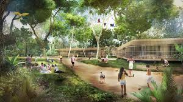
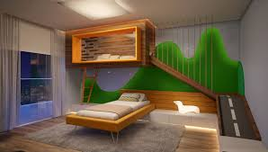

Você em sua primerra ida ao parque pode escolher:
No balanço você avista um brinquedo:
Se divertindo no gira-gira você encontra um lago:
Você pega o brinquedo e o devolve:

Você está muito cansado e volta para casa
No lago tem uma var de pesca de brinquedo
Então você vai embora
No lago você consegue pescar um peixe:
Em casa você está com sono
Você o pega e vai para casa, coloca ele no aquário e quer ir dormir
Devolve e escolhe pegar outro

em casa você vai dormir
Você finalmente pega o peixe vai para casa colocar ele no aquário